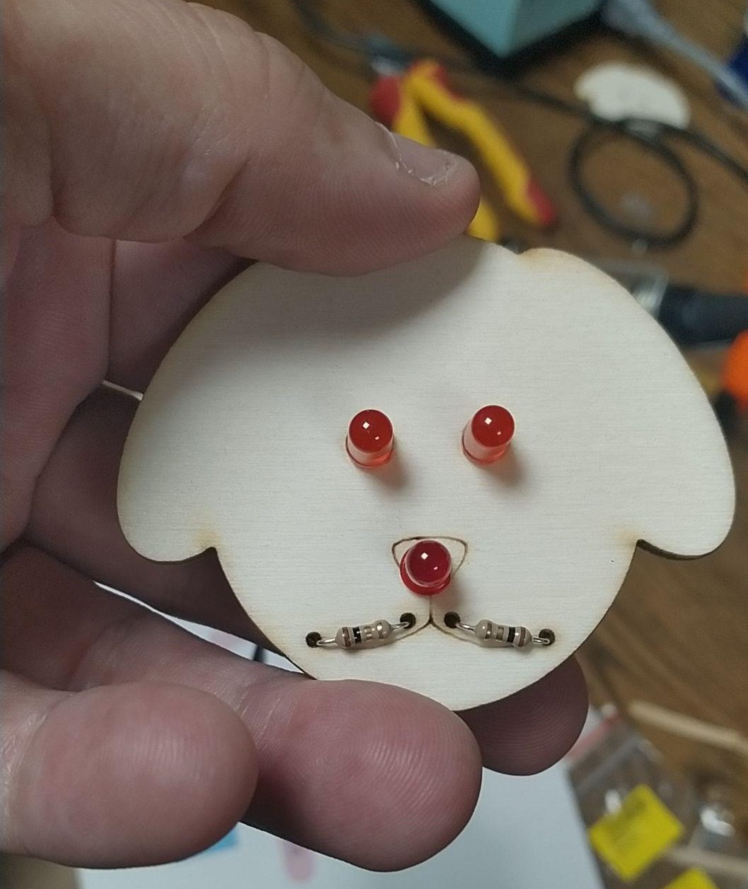
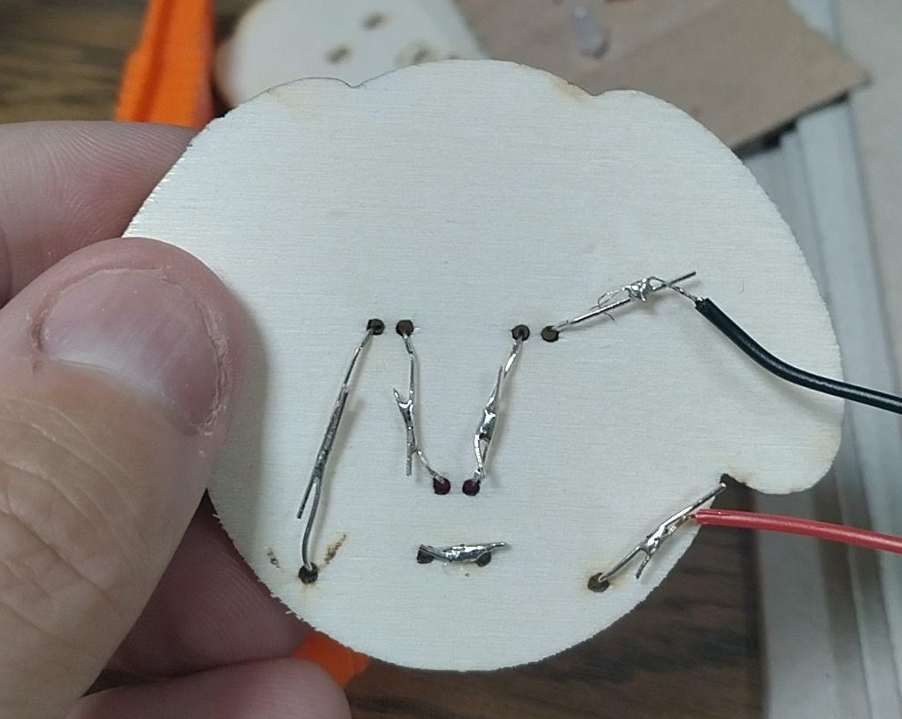
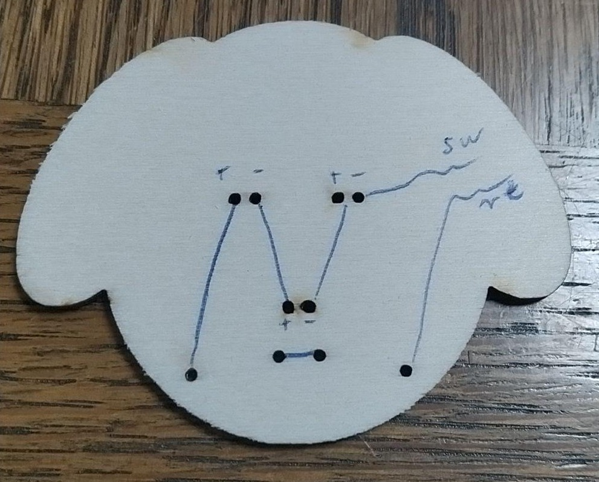
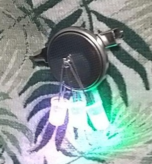
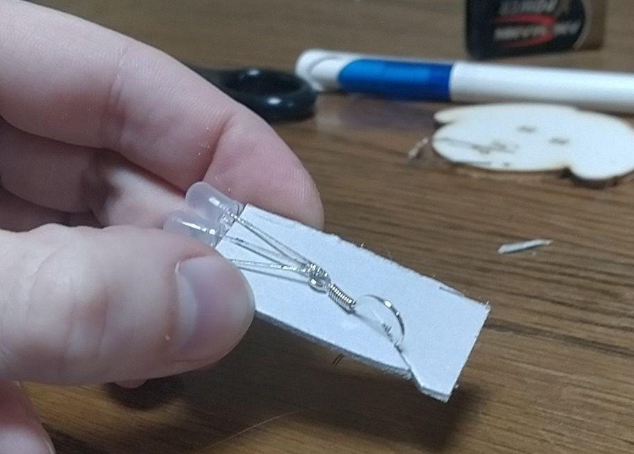
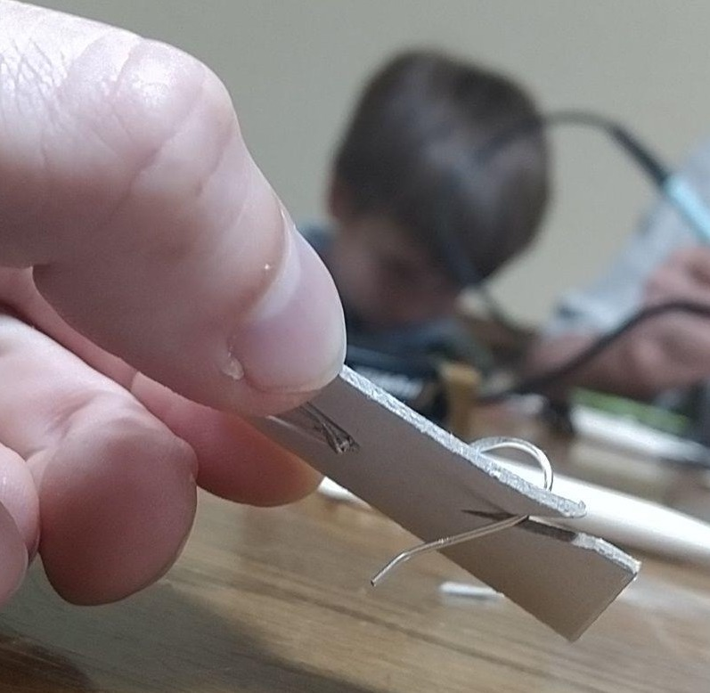

Kinder-Lötworkshop
Materialien
Der Workshop geht von 11h - 17h. Wir nehmen an, dass man für einen Ohrring 15min benötigt, wenn man noch keine Löt-Erfahrung hat, sowie 20min für einen Smiley. Wir haben 4 Lötstationen und 4 Betreuer. Wir rechnen also damit, dass wir 80 Einheiten der Smileys und 80 Einheiten der Ohrringe/Anstecknadeln benötigen.
- 250 - 300 RGB LEDs (blinkend und nicht blinkend)
- 250 - 300 bunte LEDs (nicht blinkend)
- 100 rote
- 100 grüne
- 100 gelbe
- 160 - 200 Widerstände
- 80 Knopfbatterien (CR2025)
- 80 Batteriekabel
- 80 Batterien
- 100 Tiergesichter
- 160 Papiertüten
- 60 Ohrhaken (Öse umbiegen)
- 40 Anstecknadeln für Kinder ohne Ohrlöcher
- 4 Lötkolben
- 4 Schmuckzangen
- 4 Seitenschneider
- Lötpumpe(n)
- Panzertape
- Abfallkiste
- Multimeter
- Steckdosen
- Verteiler
- Stromgenerator
- Kabelbinder
- Panzertape
- dritte Hand mit Lupe
- Lötzinn bleifrei und wenn möglich nickelfrei
- 10 - 12 Löthilfen für die Ohrringe
- Tesa
- ein paar fertige Beispiele zur Ansicht
- ausgedruckter Lötplan
- Beschreibung Multimeter
- Haftungsausschluss
- Flyer/Sticker der OWG






Ablauf Smiley-Löten
Ablauf Ohrringe/Anstecker löten
- drei LEDs in gleicher Ausrichtung auf den Karton stecken sodass sich die Enden der drei LEDs berühren
- nach Bedarf mit Tesa fixieren
- oben zusammen löten
- unten zusammen löten
- auf der Seite mit den längeren Ärmchen den Ohrhaken/die Anstecknadel auflöten
- hierbei Ohrhaken/Anstecknadeln eine Weile erwärmen
- etwas Lötzinn auf die Ohrhaken/Anstecknadeln geben
- an die LEDs halten und zusammen löten
- dabei den Kindern etwas helfen und die Einzelteile etwas fixieren (evtl mit den Zangen)
- Test: Knopfbatterie einschieben